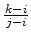

You got the original idea of making map software, called Moogle Maps, for the new cool Maple mPhone. It will even be capable of indicating the location of a house address like ``Main Street 13". However, since the mPhone has limited storage capacity, you need to reduce the data amount. You don't want to store the exact location of every single house number. Instead only a subset of the house numbers will be stored exactly, and the others will be linearly interpolated. So you want to select house numbers that will minimise the average interpolation error, given how many house locations you have capacity to store. We view the street as a straight line, and you will always store the first and the last house location.
Given that you've stored the locations xi
and xj
for the houses with numbers i
and j
respectively, but no other house in between, the interpolated value for a house with number k
with i < k < j
is
xi + (xj - xi) . 
The first line of input gives a single integer,
1 t50
, the number of test cases.
t50
, the number of test cases.
For each test case, there are two lines. The first contains
2h200
and
2ch
, where h
is the number of houses in the street and c
is the number of house locations that can be stored. The second contains h
integers in increasing order giving the location of the h
houses. Each location is in the interval [0, 1000000].
For each test case, output the average interpolation error over all the h
houses for the optimal selection of c
house locations to store. The output should be given with four decimal places, but we will accept inaccuracies of up to ±
0.001.
2
4 3
0 9 20 40
10 4
0 10 19 30 40 90 140 190 202 210
0.2500
0.3000